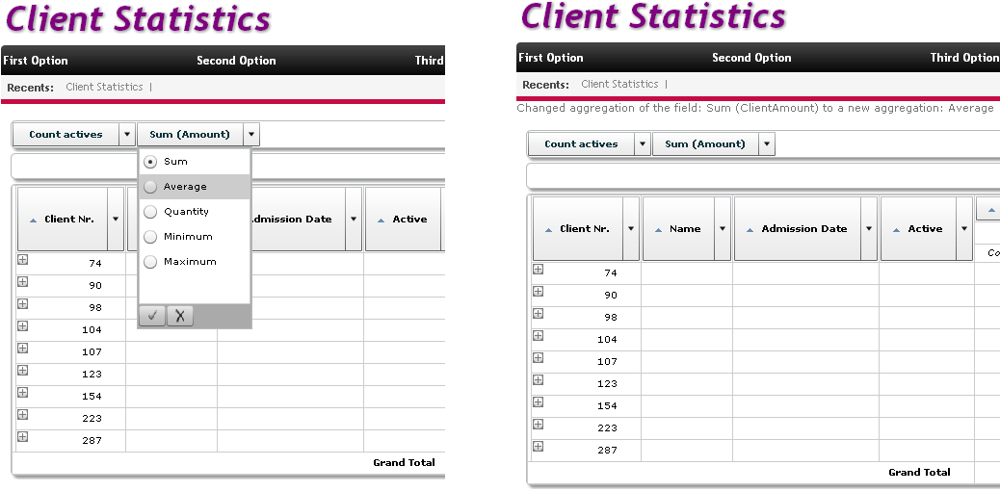

Deprecated since: GeneXus Salto.This event is triggered every time the aggregation function of a QueryElement is changed. Syntax&AggregationChangedData.{ Aggregation | Name } When the event is triggered, its parameters are queried in the "AggregationChangedData" property. It returns an SDT with the following data:
QueryViewerFilterChangedData SDT CompositionExampleIn this example, the names of the aggregation that has been changed and of the new one are displayed on screen.
Event QueryClients.AggregationChanged
Msg("Changed aggregation of the field: " + &AggregationChangedData.Name + " to a new aggregation: " + &AggregationChangedData.Aggregation)
EndEvent
 Scope
Â
|